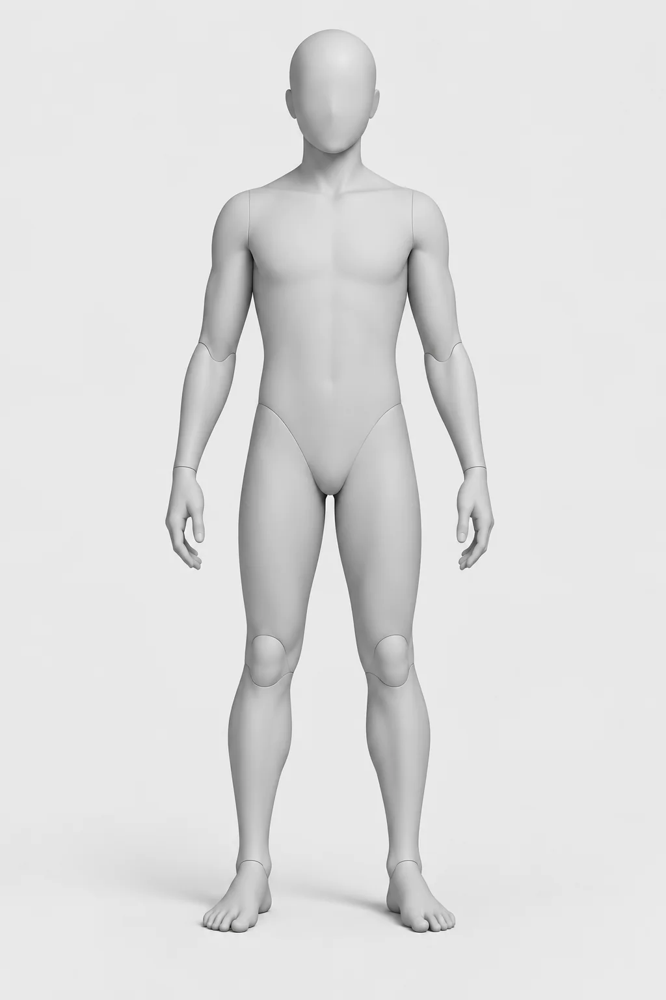
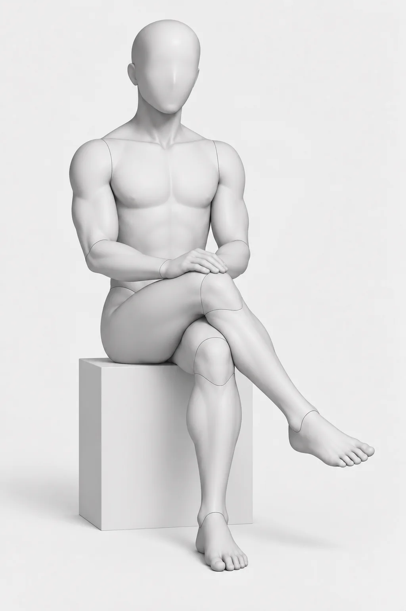
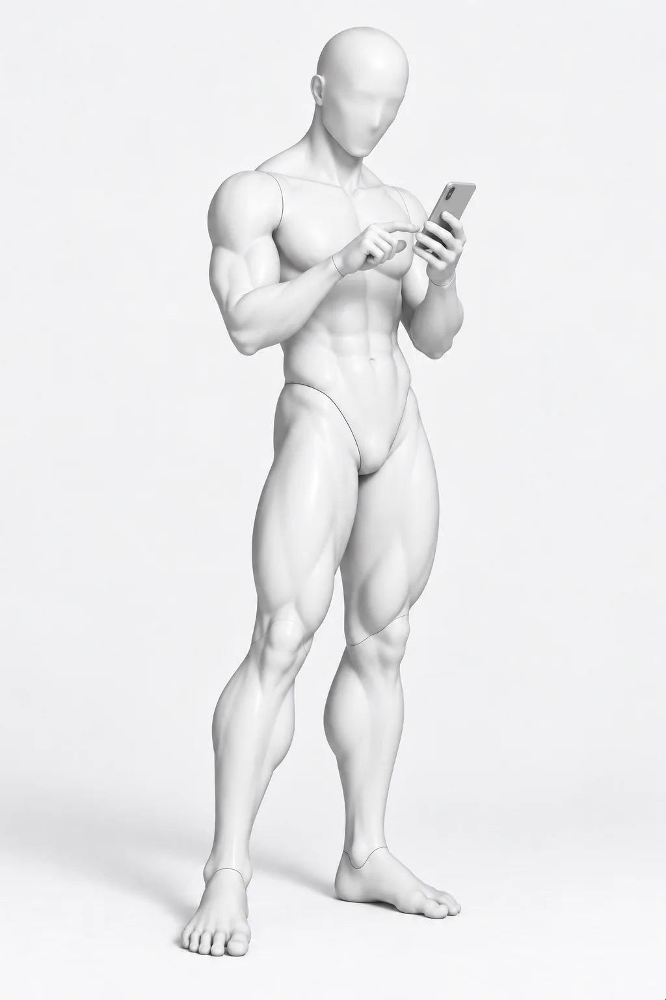
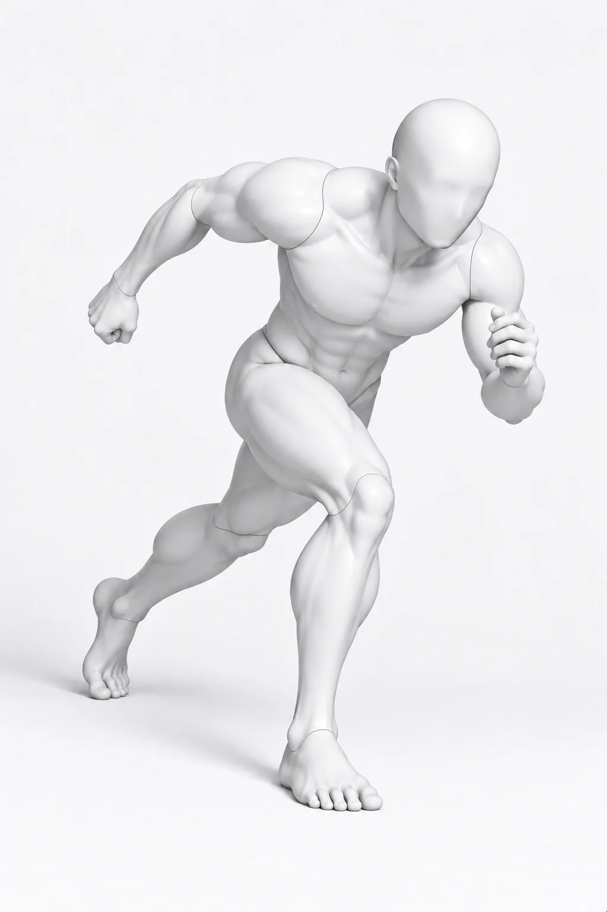
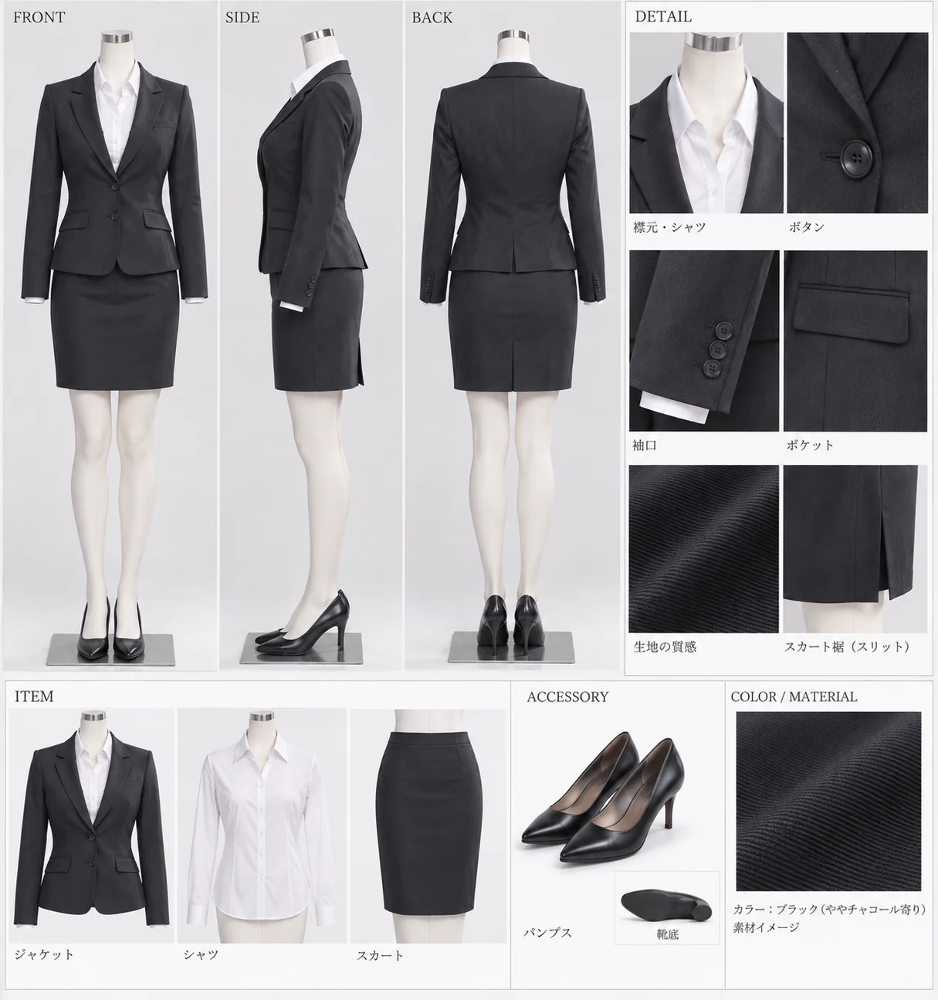

Pose Library Manager
ポーズライブラリ管理
ポーズや衣装の「使ってよい要素」と「引き継いではいけない要素」を台帳化し、制作時に安全に再利用するためのリファレンス管理基盤です。
v1.0 initial complete
31 poses / 54 clothing refs
APPROVED REFERENCES
実際に管理している素材





01 / LEDGER
ID付き台帳
POSE_0001、CLOTHING_0001のような固定IDで、ファイル名、分類、タグ、保存先、参照範囲、禁止継承要素、状態を一元管理します。
02 / SAFE TRANSFER
継承範囲を分離
ポーズ素材からは関節角度や接触関係だけ、衣装素材からはシルエットや構造だけを参照し、顔・人物同一性・体型などを混ぜません。
03 / MANIFEST
制作側へ受け渡す
CharacterProjectなど別工程へ渡す際は、台帳とmanifestを正本にして「何を参照したか」を追跡できる状態を保ちます。
04 / STORAGE SPLIT
GitHubとDriveを役割分担
文章・ルール・台帳・manifestはGitHub、画像バイナリはGoogle Driveに分離し、履歴管理と大容量素材管理を両立しています。
REFERENCE SAFETY
人物をコピーするためのライブラリにしない
- 人物同一性・顔・髪・年齢・体型・肌などはポーズ素材から継承しない
- ポーズ画像は無個性のPose Mannequin Masterを基準にする
- 衣装は構造・レイヤリング・素材感・配色・スタイリングだけを参照する
- 人間が明示採用した素材だけを本番台帳へ登録する
- 既存IDやDrive file IDを再採番・置換しない